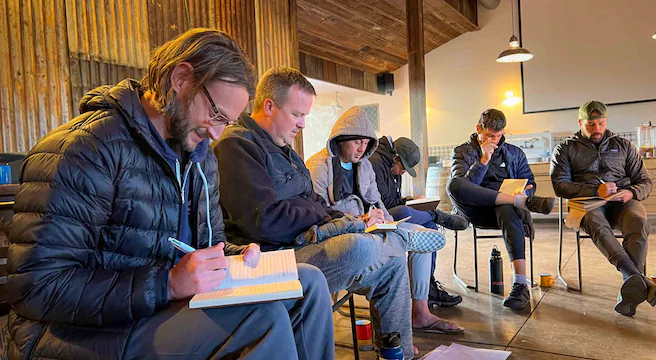
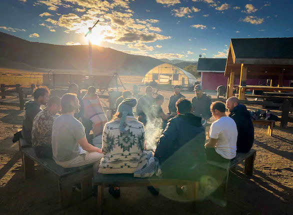
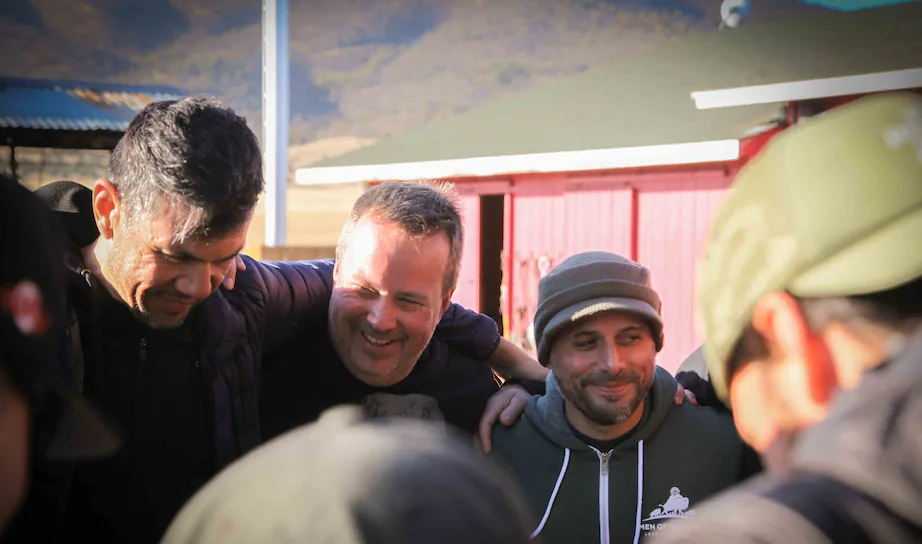

B938 · Men's Work: A Journey of Healing and Generational Impact
Hi {first_name},
I wanted to share a recent experience that left a profound impact on me and deepened my understanding of the importance of men's work.
Just yesterday, I had the privilege of recording a podcast episode for the Path alongside Ted Riter, a remarkable teacher, and guide who leads one of the men's groups I am actively involved in.
Before we began recording, Ted and I engaged in casual conversation, getting to know each other better. Little did I know that a simple question he posed would leave me truly reflective and searching within myself for an authentic answer.
He asked me, "Why men's work?" It was a moment of introspection that caught me off guard, yet it held incredible significance.
Just before this encounter, I had been discussing my goals to simplify certain aspects of my business. In response to his question, I realized that while I could have provided a quick, almost automatic answer, there was a profound shift within me that craved deeper exploration.
Honoring the significance of the question and the respect I hold for Ted, I shared that I needed time to sit with his question.
In the days that have followed that conversation, my response remains remarkably unchanged. However, what has shifted is the depth of emotion and meaning attached to it.
My passion for men's work stems from experiencing and seeing it firsthand as a powerful tool for healing generations and leaving a lasting impact on the fabric of the family.
 I have witnessed incredible transformations in men who have wholeheartedly committed themselves to this journey.
In more times than I can count, I've been humbled to witness family structures being revitalized, with newfound honesty, vulnerability, and responsibility.
Some men have embraced the role of being more present fathers, recognizing the need for emotional connection and nurturing in their relationships with their children.
In others, their journeys have led them to pursue new careers that align with their soul's purpose, nourishing their sense of fulfillment.
 Many have embarked on a profound journey of self-acceptance, reconnecting with their childlike innocence and extending forgiveness to those who have deeply hurt them, as well as themselves.
Some have completely re-examined their relationship with food and self-care in a more positive way.
 In all this, what I find most important is how the impact of this work extends far beyond one person.
Through deep introspection, unwavering commitment, and the courage to take inspired action, it is not solely our lives that undergo a profound shift, nor is it solely those in our immediate surroundings who benefit. It is the generations that came before us, and the generations that will follow, who experience the ripples of our journey.
This, my friend, is the Path of Inspired Action, and I am wholeheartedly dedicated to this path of supporting mem. I am reaching out to invite other like-minded men to join me in a 6-week, virtual group coaching program and accelerated dive into empowering the authentic man within.
Together, as a brotherhood, we can embark on a transformative journey that will amplify our impact on ourselves, our families, and generations to come.
If you feel a resonance with these words and wish to join alongside a group of dedicated brothers, I warmly invite you to reach out.
Click here to learn more about this virtual group coaching program and submit your application.
Thank you for taking the time to read this message. May your weekend be filled with joy and fulfillment.
Warm regards, Mike |